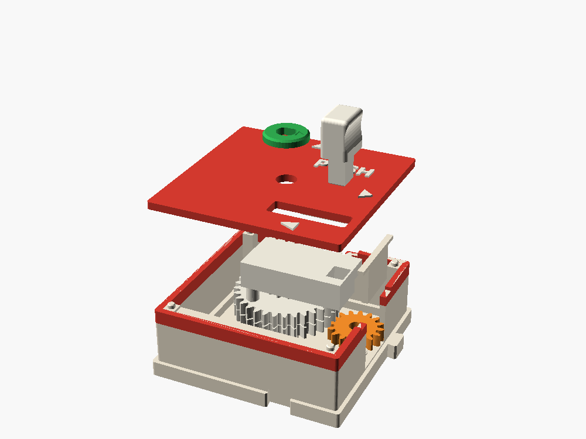
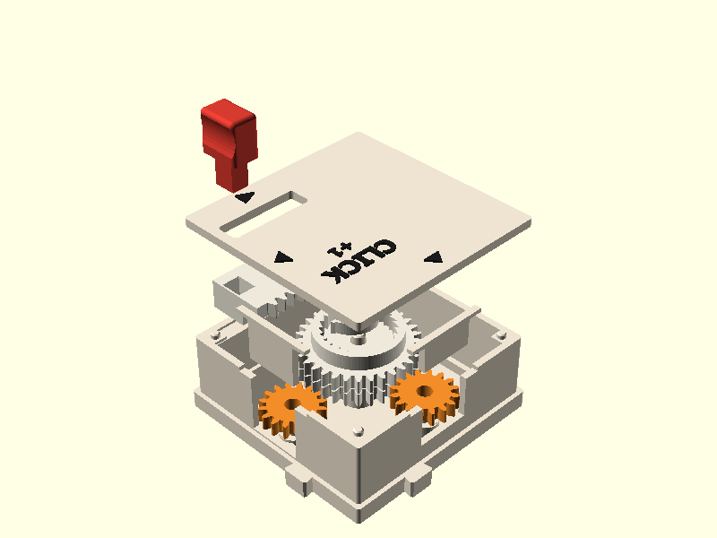
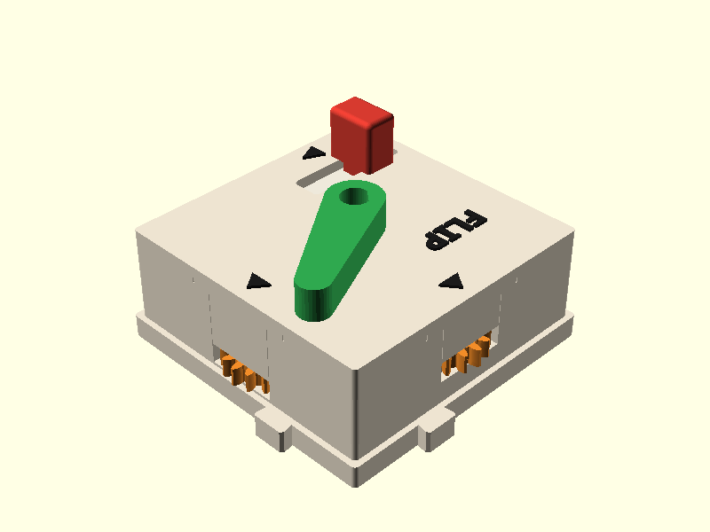

The push box
Press the red key and a rack turns a pinion, so the line moves forward. Let go and a rubber band pulls it all back. One full press turns each output port exactly one turn.
Paul's idea. One 64 mm cell, outputs on E and N like the crank.

Assembled and exploded

Try the mechanism
Top view of the inside, to scale. The rack (on the slider) rides south of the 12-tooth pinion, so pushing the key west turns K clockwise and the orange ports forward. The band runs in a groove from the east post to a peg under the slider; the west post is the stop.
- key pressed
- 0.00 mm
- pinion
- 0°
- stack K
- 0°
- E and N ports
- 0.00 turns
- band length
- 25.2 mm
- a counter downstream
- 0.0
White: stack K (32 teeth, 12-tooth pinion on top) and the slider with its rack. Orange: the E and N ports. Red: the key.
PUSH: the ports copy the key. Let go and everything returns to zero.
Where things sit in height
Every box has four gear layers under a lid. The push box uses all of them: the ports on layers 1 and 2 as usual, the rack and pinion up on layer 4, and a ledge along the south wall that the slider rides on, with the band in a groove cut into it.
A pulse, not a rotation
The crank and the motor give the line a steady turning. The push box gives it a pulse: out and back. That is a new kind of signal in the system, and the box you plug in next decides what the pulse becomes.
PUSH follows the key
Position, like a throttle. A half press gives half a turn. Everything comes back.
CLICK adds them up
Counting. Each press is one more turn, so a counter reads +1.0 per press: a tally clicker.
PUSH into a ratchet latches
Memory. The ratchet won't let the line run back, so the key stays in until you lift the pawl, like a ballpoint pen.
| Next box | PUSH (momentary) | CLICK (tally) |
|---|---|---|
| dial, meter | swings out and back, showing how far you pressed | one turn more per press |
| counter | 0.0 up to 1.0 and back to 0.0 | +1.0 per press: a scoreboard |
| Geneva | steps a quarter mid-press, steps back on release | one quarter step per press: a four-way selector |
| quarter (x¼) | a quarter turn there and back | a quarter turn per press |
| ratchet | latches the key in; the tab lets it go | runs freely |
| trig, wave | angle to 180° and back; the pen draws half a wave and retraces it | half a wave per press |
The click: a ratchet inside the box
A ratchet box downstream can't turn PUSH into a clicker, because it holds the whole line, rack and all, and the key would latch. The one-way part has to sit between the rack and the output, inside the box.
- K keeps its 32 teeth on layers 1 and 2 and grows a cup on layer 3 with 24 ratchet teeth inside.
- P sits on the same pin: two spring pawls inside the cup, the 12-tooth pinion above on layer 4.
- Pressing, the pawls push K round half a turn (12 ratchet teeth, so they land on a tooth every time). Releasing, they click back over the ramps and K stays put.
The pawl shape is the spin box's, turned to drive clockwise. Print CLICK after the spin box has shown that pawl works.

The flipper
FLIP is PUSH with two different parts: a stop block dropped into the band groove cuts the stroke to 5.24 mm (K turns 50°), and a green bat presses onto K's key instead of the dial.
The snap is leverage. The bat's tip travels about 27 mm while the key travels 5.2, five times as far. A quick jab at 0.3 to 0.5 m/s throws the tip at 1.5 to 2.5 m/s, enough to send a marble across a table. Real flipper buttons have about the same short stroke.
The right-hand box rests at 200° and swings up to 150°. The left-hand box is its mirror image: key on the west edge, pushed east, bat swinging the other way.
For more snap later: a small bump in the groove that the peg must push past, so the key breaks free like a clicky keyboard switch.

A hit-the-ball game
The lids make a flat floor at 26 mm with only 2.6 mm gaps, so a 16 mm marble or a 12.7 mm steel ball rolls across a layout. Prop up the north edge a few degrees and the ball always comes back to the flippers.
- Flippers: FLIP-L and FLIP-R on the south row, one cell apart, the drain between them.
- Moving goalie: a motor box driving the planned Scotch yoke box, whose slider sweeps 20 mm side to side.
- Goals: pocket boxes with a hole in the lid and a chute inside that rolls the ball back out.
- Score: a CLICK box into a counter at each player's side. Press it when you score.
A ball can't press a key itself: a marble at 1 m/s carries about 3 mJ and a full press takes about 200 mJ. Targets the ball hits have to be light, like a pinball drop target that falls over and is reset by hand.
Numbers
| Full stroke | 18.85 mm = π × 6 (half a turn of the 12-tooth pinion) |
| Per full press | K 180° · each 16-tooth port one whole turn · 50.3 mm of pitch line |
| Key to pitch line | × 2.67 (16 / 6) |
| Torque at a port | key force × 3 mm, less two stages ≈ 20–35 mNm for a 10–15 N press |
| Return | band only, ≈ 3 N at rest, 5 N pressed → ≈ 6 mNm at a port |
| Budgets | press 12 · return 4 (PUSH, FLIP) · CLICK press 12 only |
| Flip | 5.24 mm stroke · bat 50° · tip ≈ 27 mm (× 5.2) |
| Band | ≈ #8 office band; 25.2 mm between pegs at rest, 44 mm pressed |
Build PUSH first. Three moving parts, no flexures, and it tests the rack, the band and how the key feels. FLIP is the same box plus a stop block and a bat, so it comes almost free. CLICK adds the pawls, so it waits until the spin box has proven them.
Fit-checked on main: all three variants render, and the clash test is clean across the stroke for both hands. Not yet printed.